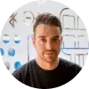

Oleg Moto
блог frontent разработчика
 1.svg)


Инженер-программист и веб-разработчик полного цикла, специализирующийся на фреймворке Ruby on Rails. Он работал с технологическими компаниями более десяти лет, помогая строить технологический бизнес с нуля.